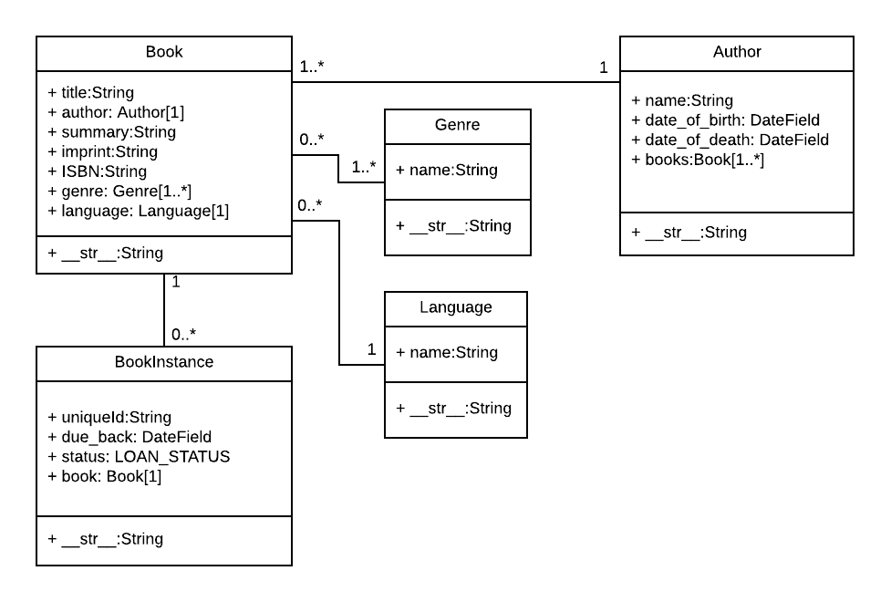

This article shows how to define models for the LocalLibrary website. It explains what a model is, how it is declared, and some of the main field types. It also briefly shows a few of the main ways you can access model data.
| Prerequisites: | Django Tutorial Part 2: Creating a skeleton website. |
|---|---|
| Objective: |
To be able to design and create your own models, choosing fields appropriately. |
Django web applications access and manage data through Python objects referred to as models. Models define the structure of stored data, including the field types and possibly also their maximum size, default values, selection list options, help text for documentation, label text for forms, etc. The definition of the model is independent of the underlying database — you can choose one of several as part of your project settings. Once you've chosen what database you want to use, you don't need to talk to it directly at all — you just write your model structure and other code, and Django handles all the dirty work of communicating with the database for you.
This tutorial shows how to define and access the models for the LocalLibrary website example.
Before you jump in and start coding the models, it's worth taking a few minutes to think about what data we need to store and the relationships between the different objects.
We know that we need to store information about books (title, summary, author, written language, category, ISBN) and that we might have multiple copies available (with globally unique id, availability status, etc.). We might need to store more information about the author than just their name, and there might be multiple authors with the same or similar names. We want to be able to sort information based on book title, author, written language, and category.
When designing your models it makes sense to have separate models for every "object" (a group of related information). In this case, the obvious objects are books, book instances, and authors.
You might also want to use models to represent selection-list options (e.g. like a drop down list of choices), rather than hard coding the choices into the website itself — this is recommended when all the options aren't known up front or may change. Obvious candidates for models, in this case, include the book genre (e.g. Science Fiction, French Poetry, etc.) and language (English, French, Japanese).
Once we've decided on our models and field, we need to think about the relationships. Django allows you to define relationships that are one to one (OneToOneField), one to many (ForeignKey) and many to many (ManyToManyField).
With that in mind, the UML association diagram below shows the models we'll define in this case (as boxes).

We've created models for the book (the generic details of the book), book instance (status of specific physical copies of the book available in the system), and author. We have also decided to have a model for the genre so that values can be created/selected through the admin interface. We've decided not to have a model for the BookInstance:status — we've hardcoded the values (LOAN_STATUS) because we don't expect these to change. Within each of the boxes, you can see the model name, the field names, and types, and also the methods and their return types.
The diagram also shows the relationships between the models, including their multiplicities. The multiplicities are the numbers on the diagram showing the numbers (maximum and minimum) of each model that may be present in the relationship. For example, the connecting line between the boxes shows that Book and a Genre are related. The numbers close to the Genre model show that a book must have one or more Genres (as many as you like), while the numbers on the other end of the line next to the Book model show that a Genre can have zero or many associated books.
Note: The next section provides a basic primer explaining how models are defined and used. As you read it, consider how we will construct each of the models in the diagram above.
This section provides a brief overview of how a model is defined and some of the more important fields and field arguments.
Models are usually defined in an application's models.py file. They are implemented as subclasses of django.db.models.Model, and can include fields, methods and metadata. The code fragment below shows a "typical" model, named MyModelName:
from django.db import models
class MyModelName(models.Model):
"""A typical class defining a model, derived from the Model class."""
# Fields
my_field_name = models.CharField(max_length=20, help_text='Enter field documentation')
...
# Metadata
class Meta:
ordering = ['-my_field_name']
# Methods
def get_absolute_url(self):
"""Returns the url to access a particular instance of MyModelName."""
return reverse('model-detail-view', args=[str(self.id)])
def __str__(self):
"""String for representing the MyModelName object (in Admin site etc.)."""
return self.my_field_name
In the below sections we'll explore each of the features inside the model in detail:
A model can have an arbitrary number of fields, of any type — each one represents a column of data that we want to store in one of our database tables. Each database record (row) will consist of one of each field value. Let's look at the example seen below:
my_field_name = models.CharField(max_length=20, help_text='Enter field documentation')
Our above example has a single field called my_field_name, of type models.CharField — which means that this field will contain strings of alphanumeric characters. The field types are assigned using specific classes, which determine the type of record that is used to store the data in the database, along with validation criteria to be used when values are received from an HTML form (i.e. what constitutes a valid value). The field types can also take arguments that further specify how the field is stored or can be used. In this case we are giving our field two arguments:
max_length=20 — States that the maximum length of a value in this field is 20 characters.help_text='Enter field documentation' — provides a text label to display to help users know what value to provide when this value is to be entered by a user via an HTML form.The field name is used to refer to it in queries and templates. Fields also have a label specified as an argument (verbose_name), the default value of which is None, meaning replacing any underscores in the field name with a space (for example my_field_name would have a default label of my field name). Note that when the label is used as a form label through Django frame, the first letter of the label is capitalised (for example my_field_name would be My field name).
The order that fields are declared will affect their default order if a model is rendered in a form (e.g. in the Admin site), though this may be overridden.
The following common arguments can be used when declaring many/most of the different field types:
True, Django will store blank values as NULL in the database for fields where this is appropriate (a CharField will instead store an empty string). The default is False.True, the field is allowed to be blank in your forms. The default is False, which means that Django's form validation will force you to enter a value. This is often used with null=True , because if you're going to allow blank values, you also want the database to be able to represent them appropriately.True, sets the current field as the primary key for the model (A primary key is a special database column designated to uniquely identify all the different table records). If no field is specified as the primary key then Django will automatically add a field for this purpose.There are many other options — you can view the full list of field options here.
The following list describes some of the more commonly used types of fields.
max_length of the data to be stored.max_length for the field, but this is used only when the field is displayed in forms (it is not enforced at the database level).datetime.date in and datetime.datetime objects, respectively). These fields can additionally declare the (mutually exclusive) parameters auto_now=True (to set the field to the current date every time the model is saved), auto_now_add (to only set the date when the model is first created) , and default (to set a default date that can be overridden by the user).ImageField adds additional validation that the uploaded file is an image). These have parameters to define how and where the uploaded files are stored.IntegerField that automatically increments. A primary key of this type is automatically added to your model if you don’t explicitly specify one.ForeignKeys, but they can be used in more complicated ways to describe the relationships between groups. These have the parameter on_delete to define what happens when the associated record is deleted (e.g. a value of models.SET_NULL would set the value to NULL).There are many other types of fields, including fields for different types of numbers (big integers, small integers, floats), booleans, URLs, slugs, unique ids, and other "time-related" information (duration, time, etc.). You can view the full list here.
You can declare model-level metadata for your Model by declaring class Meta, as shown.
class Meta:
ordering = ['-my_field_name']
One of the most useful features of this metadata is to control the default ordering of records returned when you query the model type. You do this by specifying the match order in a list of field names to the ordering attribute, as shown above. The ordering will depend on the type of field (character fields are sorted alphabetically, while date fields are sorted in chronological order). As shown above, you can prefix the field name with a minus symbol (-) to reverse the sorting order.
So as an example, if we chose to sort books like this by default:
ordering = ['title', '-pubdate']
the books would be sorted alphabetically by title, from A-Z, and then by publication date inside each title, from newest to oldest.
Another common attribute is verbose_name, a verbose name for the class in singular and plural form:
verbose_name = 'BetterName'
Other useful attributes allow you to create and apply new "access permissions" for the model (default permissions are applied automatically), allow ordering based on another field, or to declare that the class is "abstract" (a base class that you cannot create records for, and will instead be derived from to create other models).
Many of the other metadata options control what database must be used for the model and how the data is stored (these are really only useful if you need to map a model to an existing database).
The full list of metadata options are available here: Model metadata options (Django docs).
A model can also have methods.
Minimally, in every model you should define the standard Python class method __str__() to return a human-readable string for each object. This string is used to represent individual records in the administration site (and anywhere else you need to refer to a model instance). Often this will return a title or name field from the model.
def __str__(self): return self.field_name
Another common method to include in Django models is get_absolute_url(), which returns a URL for displaying individual model records on the website (if you define this method then Django will automatically add a "View on Site" button to the model's record editing screens in the Admin site). A typical pattern for get_absolute_url() is shown below.
def get_absolute_url(self):
"""Returns the url to access a particular instance of the model."""
return reverse('model-detail-view', args=[str(self.id)])
Note: Assuming you will use URLs like /myapplication/mymodelname/2 to display individual records for your model (where "2" is the id for a particular record), you will need to create a URL mapper to pass the response and id to a "model detail view" (which will do the work required to display the record). The reverse() function above is able to "reverse" your url mapper (in the above case named 'model-detail-view') in order to create a URL of the right format.
Of course to make this work you still have to write the URL mapping, view, and template!
You can also define any other methods you like, and call them from your code or templates (provided that they don't take any parameters).
Once you've defined your model classes you can use them to create, update, or delete records, and to run queries to get all records or particular subsets of records. We'll show you how to do that in the tutorial when we define our views, but here is a brief summary.
To create a record you can define an instance of the model and then call save().
# Create a new record using the model's constructor. record = MyModelName(my_field_name="Instance #1") # Save the object into the database. record.save()
Note: If you haven't declared any field as a primary_key, the new record will be given one automatically, with the field name id. You could query this field after saving the above record, and it would have a value of 1.
You can access the fields in this new record using the dot syntax, and change the values. You have to call save() to store modified values to the database.
# Access model field values using Python attributes. print(record.id) # should return 1 for the first record. print(record.my_field_name) # should print 'Instance #1' # Change record by modifying the fields, then calling save(). record.my_field_name = "New Instance Name" record.save()
You can search for records that match certain criteria using the model's objects attribute (provided by the base class).
Note: Explaining how to search for records using "abstract" model and field names can be a little confusing. In the discussion below we'll refer to a Book model with title and genre fields, where genre is also a model with a single field name.
We can get all records for a model as a QuerySet, using objects.all(). The QuerySet is an iterable object, meaning that it contains a number of objects that we can iterate/loop through.
all_books = Book.objects.all()
Django's filter() method allows us to filter the returned QuerySet to match a specified text or numeric field against particular criteria. For example, to filter for books that contain "wild" in the title and then count them, we could do the following.
wild_books = Book.objects.filter(title__contains='wild') number_wild_books = wild_books.count()
The fields to match and the type of match are defined in the filter parameter name, using the format: field_name__match_type (note the double underscore between title and contains above). Above we're filtering title with a case-sensitive match. There are many other types of matches you can do: icontains (case insensitive), iexact (case-insensitive exact match), exact (case-sensitive exact match) and in, gt (greater than), startswith, etc. The full list is here.
In some cases you'll need to filter on a field that defines a one-to-many relationship to another model (e.g. a ForeignKey). In this case you can "index" to fields within the related model with additional double underscores. So for example to filter for books with a specific genre pattern, you will have to index to the name through the genre field, as shown below:
# Will match on: Fiction, Science fiction, non-fiction etc. books_containing_genre = Book.objects.filter(genre__name__icontains='fiction')
Note: You can use underscores (__) to navigate as many levels of relationships (ForeignKey/ManyToManyField) as you like. For example, a Book that had different types, defined using a further "cover" relationship might have a parameter name: type__cover__name__exact='hard'.
There is a lot more you can do with queries, including backwards searches from related models, chaining filters, returning a smaller set of values etc. For more information see Making queries (Django Docs).
In this section we will start defining the models for the library. Open models.py (in /locallibrary/catalog/). The boilerplate at the top of the page imports the models module, which contains the model base class models.Model that our models will inherit from.
from django.db import models # Create your models here.
Copy the Genre model code shown below and paste it into the bottom of your models.py file. This model is used to store information about the book category — for example whether it is fiction or non-fiction, romance or military history, etc. As mentioned above, we've created the Genre as a model rather than as free text or a selection list so that the possible values can be managed through the database rather than being hard coded.
class Genre(models.Model): """Model representing a book genre.""" name = models.CharField(max_length=200, help_text='Enter a book genre (e.g. Science Fiction)') def __str__(self): """String for representing the Model object.""" return self.name
The model has a single CharField field (name), which is used to describe the genre (this is limited to 200 characters and has some help_text. At the end of the model we declare a __str__() method, which returns the name of the genre defined by a particular record. No verbose name has been defined, so the field will be called Name in forms.
Copy the Book model below and again paste it into the bottom of your file. The Book model represents all information about an available book in a general sense, but not a particular physical "instance" or "copy" available for loan. The model uses a CharField to represent the book's title and isbn . For isbn, note how the first unnamed parameter explicitly sets the label as "ISBN" (otherwise it would default to "Isbn"). We also set parameter unique as true in order to ensure all books have a unique ISBN (the unique parameter makes the field value globally unique in a table). The model uses TextField for the summary, because this text may need to be quite long.
from django.urls import reverse # Used to generate URLs by reversing the URL patterns
class Book(models.Model):
"""Model representing a book (but not a specific copy of a book)."""
title = models.CharField(max_length=200)
# Foreign Key used because book can only have one author, but authors can have multiple books
# Author as a string rather than object because it hasn't been declared yet in the file
author = models.ForeignKey('Author', on_delete=models.SET_NULL, null=True)
summary = models.TextField(max_length=1000, help_text='Enter a brief description of the book')
isbn = models.CharField('ISBN', max_length=13, unique=True,
help_text='13 Character <a href="https://www.isbn-international.org/content/what-isbn">ISBN number</a>')
# ManyToManyField used because genre can contain many books. Books can cover many genres.
# Genre class has already been defined so we can specify the object above.
genre = models.ManyToManyField(Genre, help_text='Select a genre for this book')
def __str__(self):
"""String for representing the Model object."""
return self.title
def get_absolute_url(self):
"""Returns the url to access a detail record for this book."""
return reverse('book-detail', args=[str(self.id)])
The genre is a ManyToManyField, so that a book can have multiple genres and a genre can have many books. The author is declared as ForeignKey, so each book will only have one author, but an author may have many books (in practice a book might have multiple authors, but not in this implementation!)
In both field types the related model class is declared as the first unnamed parameter using either the model class or a string containing the name of the related model. You must use the name of the model as a string if the associated class has not yet been defined in this file before it is referenced! The other parameters of interest in the author field are null=True, which allows the database to store a Null value if no author is selected, and on_delete=models.SET_NULL, which will set the value of the book's author field to Null if the associated author record is deleted.
By default on_delete=models.CASCADE, which means that if the author was deleted, this book would be deleted too! We use SET_NULL here, but we could also use PROTECT or RESTRICT to prevent the author being deleted while any book uses it.
The model also defines __str__() , using the book's title field to represent a Book record. The final method, get_absolute_url() returns a URL that can be used to access a detail record for this model (for this to work we will have to define a URL mapping that has the name book-detail, and define an associated view and template).
Next, copy the BookInstance model (shown below) under the other models. The BookInstance represents a specific copy of a book that someone might borrow, and includes information about whether the copy is available or on what date it is expected back, "imprint" or version details, and a unique id for the book in the library.
Some of the fields and methods will now be familiar. The model uses:
ForeignKey to identify the associated Book (each book can have many copies, but a copy can only have one Book). The key specifies on_delete=models.RESTRICT to ensure that the Book cannot be deleted while referenced by a BookInstance.CharField to represent the imprint (specific release) of the book.import uuid # Required for unique book instances
class BookInstance(models.Model):
"""Model representing a specific copy of a book (i.e. that can be borrowed from the library)."""
id = models.UUIDField(primary_key=True, default=uuid.uuid4, help_text='Unique ID for this particular book across whole library')
book = models.ForeignKey('Book', on_delete=models.RESTRICT, null=True)
imprint = models.CharField(max_length=200)
due_back = models.DateField(null=True, blank=True)
LOAN_STATUS = (
('m', 'Maintenance'),
('o', 'On loan'),
('a', 'Available'),
('r', 'Reserved'),
)
status = models.CharField(
max_length=1,
choices=LOAN_STATUS,
blank=True,
default='m',
help_text='Book availability',
)
class Meta:
ordering = ['due_back']
def __str__(self):
"""String for representing the Model object."""
return f'{self.id} ({self.book.title})'
We additionally declare a few new types of field:
UUIDField is used for the id field to set it as the primary_key for this model. This type of field allocates a globally unique value for each instance (one for every book you can find in the library).DateField is used for the due_back date (at which the book is expected to become available after being borrowed or in maintenance). This value can be blank or null (needed for when the book is available). The model metadata (Class Meta) uses this field to order records when they are returned in a query.status is a CharField that defines a choice/selection list. As you can see, we define a tuple containing tuples of key-value pairs and pass it to the choices argument. The value in a key/value pair is a display value that a user can select, while the keys are the values that are actually saved if the option is selected. We've also set a default value of 'm' (maintenance) as books will initially be created unavailable before they are stocked on the shelves.The method __str__() represents the BookInstance object using a combination of its unique id and the associated Book's title.
A little Python:
f'{self.id} ({self.book.title})'.'{0} ({1})'.format(self.id,self.book.title)).Copy the Author model (shown below) underneath the existing code in models.py.
class Author(models.Model):
"""Model representing an author."""
first_name = models.CharField(max_length=100)
last_name = models.CharField(max_length=100)
date_of_birth = models.DateField(null=True, blank=True)
date_of_death = models.DateField('Died', null=True, blank=True)
class Meta:
ordering = ['last_name', 'first_name']
def get_absolute_url(self):
"""Returns the url to access a particular author instance."""
return reverse('author-detail', args=[str(self.id)])
def __str__(self):
"""String for representing the Model object."""
return f'{self.last_name}, {self.first_name}'
All of the fields/methods should now be familiar. The model defines an author as having a first name, last name, and dates of birth and death (both optional). It specifies that by default the __str__() returns the name in last name, firstname order. The get_absolute_url() method reverses the author-detail URL mapping to get the URL for displaying an individual author.
All your models have now been created. Now re-run your database migrations to add them to your database.
python3 manage.py makemigrations python3 manage.py migrate
Imagine a local benefactor donates a number of new books written in another language (say, Farsi). The challenge is to work out how these would be best represented in our library website, and then to add them to the models.
Some things to consider:
Book, BookInstance, or some other object?After you've decided, add the field. You can see what we decided on Github here.
Don't forget that after a change to your model, you should again re-run your database migrations to add the changes.
python3 manage.py makemigrations python3 manage.py migrate
In this article we've learned how models are defined, and then used this information to design and implement appropriate models for the LocalLibrary website.
At this point we'll divert briefly from creating the site, and check out the Django Administration site. This site will allow us to add some data to the library, which we can then display using our (yet to be created) views and templates.
{{PreviousMenuNext("Learn/Server-side/Django/skeleton_website", "Learn/Server-side/Django/Admin_site", "Learn/Server-side/Django")}}